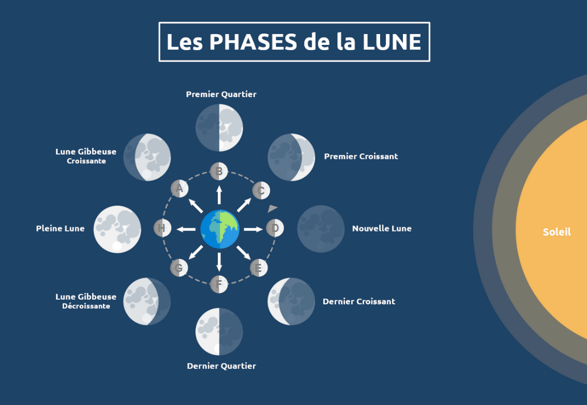

La Lune
La Lune est le seul satellite naturel de la Terre. Elle se trouve à environ 384 400 kilomètres de nous et mesure un peu plus de 3 470 kilomètres de diamètre. Bien qu'elle soit beaucoup plus petite que la Terre, elle joue un rôle essentiel dans plusieurs phénomènes terrestres, notamment les marées.
Le mot "Lune" vient du latin Luna, qui était aussi le nom de la déesse romaine de la Lune. Chez les Grecs, elle est associée à Séléné. De nombreuses civilisations ont attribué à la Lune des significations mythologiques et spirituelles, fascinées par son éclat changeant dans le ciel nocturne.
La Lune passe par différentes phases au cours d'un cycle d'environ 29,5 jours : nouvelle Lune, premier croissant, premier quartier, pleine Lune, dernier quartier, et dernier croissant. Ces phases sont dues à la manière dont la lumière du Soleil éclaire la Lune, vue depuis la Terre.
Source : https://www.pleine-lune.org/phases-de-la-lune
La gravité de la Lune agit sur les océans de la Terre, provoquant les marées. Elle stabilise aussi l'inclinaison de l'axe terrestre, ce qui contribue à maintenir un climat relativement stable. Sans elle, la vie sur Terre aurait pu évoluer très différemment. Le frottement de l'eau attiré par la Lune sur la surface terrestre fait perdre de l'énergie à la Lune. Imperceptiblement, celle-ci se rapproche lentement de la Terre.